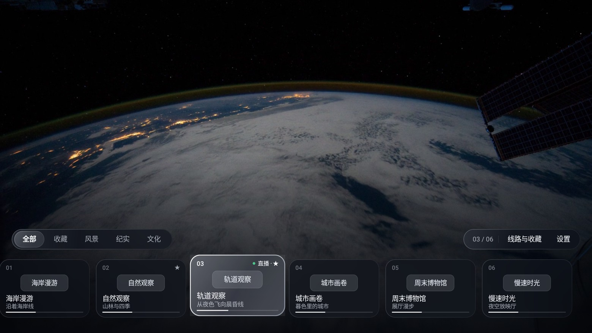
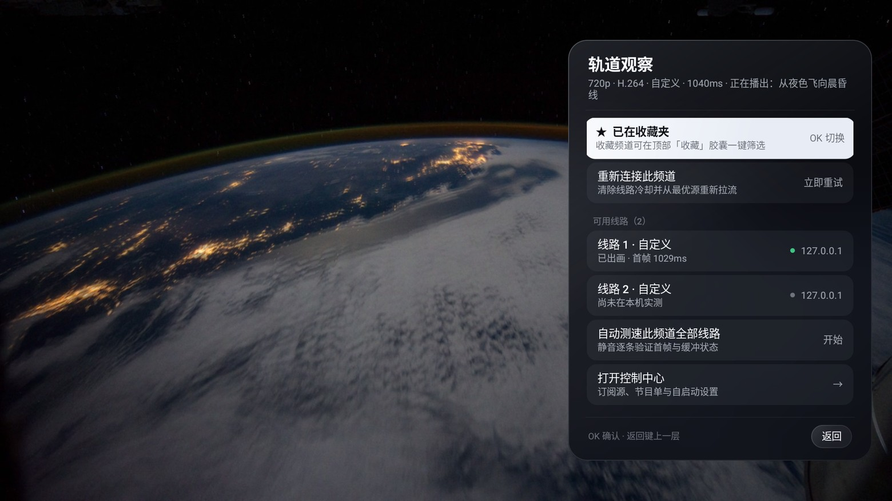
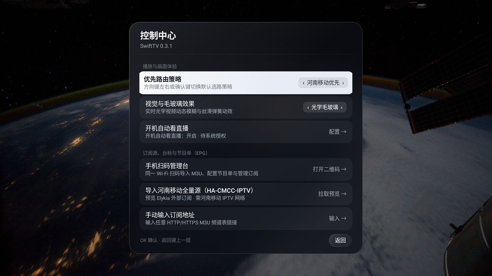

01 · 合规定位
纯空壳零内置，开源可审计
源码与安装包内不携带任何第三方直播源或商业频道预设。收藏、订阅与播放统计完全存于电视本机，不上传云端。
专为 Android TV 6.0+ 打造的轻量播放器。零广告、零账号、零内置第三方片源；开箱扫码导源、手机一键直推、多主机 2.5s 并发竞速切台，并内置专为长辈优化的 4 挡即时大字缩放与自然上下键换台。

去掉臃肿壳子与弹窗干扰，把每一个字节留给播放稳定性与客厅易用性。
源码与安装包内不携带任何第三方直播源或商业频道预设。收藏、订阅与播放统计完全存于电视本机，不上传云端。
空列表启动直达局域网配对二维码；配合 SwiftTV 安装助手 1.1.4，可在手机粘贴链接或挑选本地 M3U / TXT 一键发送至电视确认。
除完整 #EXTINF 频道表外，可直接导入单频道 .m3u8 媒体/主清单与 .ts/.flv/fMP4 直播直链，自动归入「单频道直连」。
当频道头部缺少近期健康记录时，自动对最多 3 个独立主机并发发起轻量探测，先通先播并取消其余慢连接，告别固定 8 秒死等。
支持标准、大号、长辈大字与超大字四挡即时缩放而不中断播放；默认 ↓ 下一个频道、↑ 上一个频道，支持一键反转。
高端硬件使用 128×72 低开销实时视频毛玻璃采样，老旧低内存盒子可在设置中切换「轻量纯黑背景」，确保 60fps 跟手度。
亲手触发多主机竞速切台与手机局域网直推流程，了解 SwiftTV 如何压榨每一次毫秒级延迟。
当首选线路失效或尚无历史成功记录时，SwiftTV 并发向最多 3 个不同主机发送只读报文头的轻量请求（上限 2.5 秒），锁定最先返回可用流头的主机并立即取消慢连。
不用在电视上拿遥控器逐字母打长网址：手机安装助手可通过局域网 ADB 无线推送，或让电视直接从手机随机令牌临时 HTTP 通道取走本地 M3U。
纯正 tvOS 风格暗色玻璃与瓷白焦点，方向键先移焦点再确认切换。


SwiftTV 本身不内置任何片源。你可以先复制下方合法公开测试流验证播放效果，再导入自己合法持有的订阅源。
正在从 GitHub Releases 核对最新公开版本…
适用于 Android TV / 电视盒子 6.0+（API 23 及以上）
29534b6b730682a407281dcf6ec5fb7d1c0c90cec5822b8b23713b01b2d71c29
适用于 Android 手机 8.0+ · 局域网无线装到电视 & 一键推源
09d381d4119b110507615cca0f84cfa61ec97ef8e020faa38fbb8ddd27d71a6e
.m3u 后通过配对页面的「本地 M3U 文件」上传给电视。